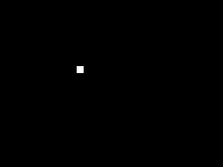
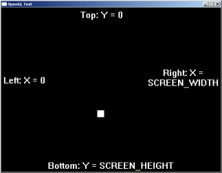
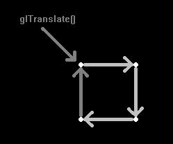

Using SDL with OpenGL 2.1

Last Updated 12/31/10
There's a point where SDL's rendering just isn't enough. When you need more power, speed, and flexibility, it's time to move onto OpenGL. This lesson will get you started with some OpenGL/SDL basics.#include "SDL/SDL.h" #include "SDL/SDL_opengl.h"
First we need to remember to include the SDL OpenGL header so we can use OpenGL's rendering.
//The square
class Square
{
private:
//The offsets
int x, y;
//The velocity of the square
int xVel, yVel;
public:
//Initializes
Square();
//Handles key presses
void handle_input();
//Moves the square
void move();
//Shows the square on the screen
void show();
};
Here's the square we're going to move around on the screen. Nothing has changed from the overall structure of the class.
When using SDL with OpenGL the event handling, audio, time, and threading all stay the same. Only the rendering changes.
When using SDL with OpenGL the event handling, audio, time, and threading all stay the same. Only the rendering changes.
bool init()
{
//Initialize SDL
if( SDL_Init( SDL_INIT_EVERYTHING ) < 0 )
{
return false;
}
//Create Window
if( SDL_SetVideoMode( SCREEN_WIDTH, SCREEN_HEIGHT, SCREEN_BPP, SDL_OPENGL ) == NULL )
{
return false;
}
//Initialize OpenGL
if( init_GL() == false )
{
return false;
}
//Set caption
SDL_WM_SetCaption( "OpenGL Test", NULL );
return true;
}
Here is our init() function.
First we initialize SDL as we always do. Then we create our OpenGL window. When we want to use OpenGL we pass the SDL_OPENGL flag to SDL_SetVideoMode() instead of SDL_SWSURFACE. Now the window will use OpenGL's hardware accelerated rendering instead of SDL's software rendering. This also means we can't use SDL to blit to the screen.
Then we call our init_GL() function (which I will show you in a second) to initialize OpenGL and lastly we set the window caption.
First we initialize SDL as we always do. Then we create our OpenGL window. When we want to use OpenGL we pass the SDL_OPENGL flag to SDL_SetVideoMode() instead of SDL_SWSURFACE. Now the window will use OpenGL's hardware accelerated rendering instead of SDL's software rendering. This also means we can't use SDL to blit to the screen.
Then we call our init_GL() function (which I will show you in a second) to initialize OpenGL and lastly we set the window caption.
bool init_GL()
{
//Set clear color
glClearColor( 0, 0, 0, 0 );
Here is the top of our OpenGL initialiation function. The first thing we do is set the clear color.
When we clear the screen, we want it to be black. So we set the clear color to be black (R0, G0, B0, A0) with glClearColor().
When we clear the screen, we want it to be black. So we set the clear color to be black (R0, G0, B0, A0) with glClearColor().
//Set projection
glMatrixMode( GL_PROJECTION );
glLoadIdentity();
glOrtho( 0, SCREEN_WIDTH, SCREEN_HEIGHT, 0, -1, 1 );
Next we have to set the projection matrix. The projection matrix controls how everything will be shown on the screen.
First we set the matrix mode to projection using glMatrixMode(). Then we initialize the projection matrix by calling glLoadIdentity(). glLoadIdentity() essentially resets the matrix by setting it to be the identity matrix.
Didn't get a word I just said? Don't worry, I'll explain what a matrix is later.
Now that the projection matrix is initialized it's time to set our projection. We do this by calling glOrtho() which will give us an orthographic (meaning 2 dimensional) projection. For those of you wanting to do 3D, look up gluPerspective().
We want it to be 2D and to have the same coordinate system as SDL's rendering. So we set the coordinate system like this:
The 5th and 6th argument deal with the z axis. What is the z axis? Well the x axis goes left and right, the y axis goes up and down and the z axis goes forward and back. The 5th argument is near which is set to z = -1. The 6th argument is far which is set to z = 1.
We're not really going to bother with the z axis in this tutorial.
First we set the matrix mode to projection using glMatrixMode(). Then we initialize the projection matrix by calling glLoadIdentity(). glLoadIdentity() essentially resets the matrix by setting it to be the identity matrix.
Didn't get a word I just said? Don't worry, I'll explain what a matrix is later.
Now that the projection matrix is initialized it's time to set our projection. We do this by calling glOrtho() which will give us an orthographic (meaning 2 dimensional) projection. For those of you wanting to do 3D, look up gluPerspective().
We want it to be 2D and to have the same coordinate system as SDL's rendering. So we set the coordinate system like this:

So we set the left, right, bottom, and top arguments like so. For those of you wanting to have the origin like the cartesian coordinate system, just swap the top and bottom arguments.
The 5th and 6th argument deal with the z axis. What is the z axis? Well the x axis goes left and right, the y axis goes up and down and the z axis goes forward and back. The 5th argument is near which is set to z = -1. The 6th argument is far which is set to z = 1.
We're not really going to bother with the z axis in this tutorial.
//Initialize modelview matrix
glMatrixMode( GL_MODELVIEW );
glLoadIdentity();
Next we initialize the modelview matrix much like we did the projection matrix.
The modelview matrix controls the objects that are drawn on the screen. We'll see an example of this in the square's show() function.
The modelview matrix controls the objects that are drawn on the screen. We'll see an example of this in the square's show() function.
//If there was any errors
if( glGetError() != GL_NO_ERROR )
{
return false;
}
//If everything initialized
return true;
}
At the end of our init_GL() function we check if there were any errors using glGetError(). If there were no errors we return true.
void Square::show()
{
//Move to offset
glTranslatef( x, y, 0 );
Here's our show() function from the Square class. Now it's time to do some OpenGL rendering.
First thing we do is translate (meaning we move to) the offset of the square using glTranslate(). The first two arguments are the x and y offsets and the last one is the z. We don't bother with z axis so it's set to 0.
First thing we do is translate (meaning we move to) the offset of the square using glTranslate(). The first two arguments are the x and y offsets and the last one is the z. We don't bother with z axis so it's set to 0.
//Start quad
glBegin( GL_QUADS );
//Set color to white
glColor4f( 1.0, 1.0, 1.0, 1.0 );
Now it's time to draw our square.
To start drawing our square we call glBegin() with the GL_QUADS argument. We want to draw a white square so we set the color with glColor().
You may be wondering why the color is 1, 1, 1, 1. Shouldn't it be R255, G255, B255, A255? The thing is glColor4f() uses floating point colors. It actually means R100%, G100%, B100%, A100% which is white. Note that glClearColor() in the init_GL() function also used floating point colors.
Another thing I want to point out is that the "4f" in glColor4f() stands for 4 floating point numbers. Many OpenGL functions have different versions with different names based on the arguments the function takes.
For example, in the previous piece of code we used glTranslatef() which took in floats. We could have also used glTranslated() which takes in doubles.
To start drawing our square we call glBegin() with the GL_QUADS argument. We want to draw a white square so we set the color with glColor().
You may be wondering why the color is 1, 1, 1, 1. Shouldn't it be R255, G255, B255, A255? The thing is glColor4f() uses floating point colors. It actually means R100%, G100%, B100%, A100% which is white. Note that glClearColor() in the init_GL() function also used floating point colors.
Another thing I want to point out is that the "4f" in glColor4f() stands for 4 floating point numbers. Many OpenGL functions have different versions with different names based on the arguments the function takes.
For example, in the previous piece of code we used glTranslatef() which took in floats. We could have also used glTranslated() which takes in doubles.
//Draw square
glVertex3f( 0, 0, 0 );
glVertex3f( SQUARE_WIDTH, 0, 0 );
glVertex3f( SQUARE_WIDTH, SQUARE_HEIGHT, 0 );
glVertex3f( 0, SQUARE_HEIGHT, 0 );
//End quad
glEnd();
Now it's time to draw the vertices (meaning the corners) of the square.
Each vertex is drawn by calling glVertex3f(). We draw them from the translation point in this order: top left, top right, bottom right, bottom left.
Each vertex is drawn by calling glVertex3f(). We draw them from the translation point in this order: top left, top right, bottom right, bottom left.

After we've finished drawing the vertices we call glEnd() so OpenGL can form our square from the vertices.
//Reset
glLoadIdentity();
}
At the end of the show() function we call glLoadIdentity() to reset the modelview matrix.
What is the matrix? this:
[ 1, 0, 0, 0 ]
[ 0, 1, 0, 0 ]
[ 0, 0, 1, 0 ]
[ 0, 0, 0, 1 ]
It's just a 4 x 4 set of numbers, but it's very important. It controls how much the vertices are translated, rotated, and scaled.
Whenever we call glTranslate() we alter the matrix. If we don't reset the matrix by calling glLoadIdentity() after translating, when we call glTranslate() the next time we'll be moving from the last point of translation instead of the origin.
What is the matrix? this:
[ 1, 0, 0, 0 ]
[ 0, 1, 0, 0 ]
[ 0, 0, 1, 0 ]
[ 0, 0, 0, 1 ]
It's just a 4 x 4 set of numbers, but it's very important. It controls how much the vertices are translated, rotated, and scaled.
Whenever we call glTranslate() we alter the matrix. If we don't reset the matrix by calling glLoadIdentity() after translating, when we call glTranslate() the next time we'll be moving from the last point of translation instead of the origin.
//While there are events to handle
while( SDL_PollEvent( &event ) )
{
//Handle key presses
square.handle_input();
//Handle user quit
if( event.type == SDL_QUIT )
{
quit = true;
}
}
//Move the square
square.move();
//Clear the screen
glClear( GL_COLOR_BUFFER_BIT );
//Show the square
square.show();
//Update screen
SDL_GL_SwapBuffers();
//Cap the frame rate
if( fps.get_ticks() < 1000 / FRAMES_PER_SECOND )
{
SDL_Delay( ( 1000 / FRAMES_PER_SECOND ) - fps.get_ticks() );
}
}
Here's our main loop.
First we handle events and move the square like we usually do. Then we clear the screen by calling glClear(). After that show the square on the screen. To update the screen we call SDL_GL_SwapBuffers() instead of SDL_Flip() since we're using OpenGL's rendering. Lastly we regulate our frame rate and continue on with the main loop.
First we handle events and move the square like we usually do. Then we clear the screen by calling glClear(). After that show the square on the screen. To update the screen we call SDL_GL_SwapBuffers() instead of SDL_Flip() since we're using OpenGL's rendering. Lastly we regulate our frame rate and continue on with the main loop.
Yeah that was a lot of work just to make a square show on the screen. Now you see why these beginners tutorials used SDL's rendering. OpenGL is much more powerful than SDL's rendering, but as you saw it's also harder to use.
For now, the tutorials stop here. I am still learning OpenGL and once I'm ready there will be a batch of OpenGL tutorials. When will they be out? Not for a good while. I'll announce it on the news page. So don't stuff my mailbox. =)
Until then you can check out NeHe. The tutorial text uses Win32 API but the actual OpenGL code is mostly the same. There's also SDL ports of the code at the bottom of most of the pages. They're called "Linux/SDL" ports, but since SDL is cross platform the code should work on Windows and OS X. The SDL ports haven't been updated in a small while and may not compile as is.
For now I've created a study guide you can check out. It's not as in depth as my tutorials, but hopefully it's enough to get you off the ground.
For now, the tutorials stop here. I am still learning OpenGL and once I'm ready there will be a batch of OpenGL tutorials. When will they be out? Not for a good while. I'll announce it on the news page. So don't stuff my mailbox. =)
Until then you can check out NeHe. The tutorial text uses Win32 API but the actual OpenGL code is mostly the same. There's also SDL ports of the code at the bottom of most of the pages. They're called "Linux/SDL" ports, but since SDL is cross platform the code should work on Windows and OS X. The SDL ports haven't been updated in a small while and may not compile as is.
For now I've created a study guide you can check out. It's not as in depth as my tutorials, but hopefully it's enough to get you off the ground.